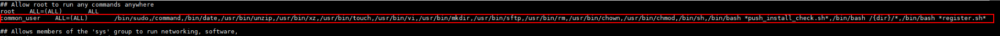

When installing the client in automatic push mode, if User Type is set to Common User, you need to add the common user to sudoers first. Otherwise, client registration will fail. This section uses EulerOS as an example.
Procedure
- Use PuTTY to log in to the host where the client is to be installed as user root.
- Run the following command to search for the directory of the sudoers configuration file:
whereis sudoers
Information similar to the following is displayed. /etc/sudoers is the directory of the sudoers configuration file.
sudoers: /etc/sudoers /etc/sudoers.d /uer/share/man/man5/sudoers.5.gz
- Run the following command to query the permission on the sudoers configuration file:
ll /etc/sudoers
If information similar to the following is displayed, user root has only the read-only permission on the sudoers configuration file. In this case, perform 4 to grant the write permission on the configuration file to user root. If user root has the write permission on the configuration file, go to 5.
-r--r-----. 1 root root 20724 Nov 19 21:04 /etc/sudoers
- Run the following command to grant the write permission on the sudoers configuration file:
chmod u+w /etc/sudoers
- Run the following commands to back up the source file:
mkdir /etc/backup_sudoers
cp /etc/sudoers /etc/backup_sudoers
- Run the following command to open the sudoers configuration file:
vim /etc/sudoers
- Check whether the Defaults requiretty field exists in the configuration file. If yes, delete this configuration.

If the Defaults requiretty field is enabled, the sudo command can be executed only after you log in to the host through the actual terminal and the client will fail to be installed in automatic push mode.
- Add the following content to the configuration file, save the modification, and exit.Common user common_user is used as an example. Replace it with the actual common username used for client installation.

- Modify the configuration file in strict compliance with the requirements. Otherwise, the client may fail to be installed in automatic push mode or the sudo command may fail to be executed.
- In the configuration file, the following added content is divided into three columns in a row. The first and second columns are separated by four characters, and the second and third columns are separated by seven characters. If the following content copied to the configuration file contains line feed characters, manually delete the line feed characters.
- If the sudo non-password-free mode is used, add the following content to the configuration file:
common_user ALL=(ALL) /bin/sudo,/bin/command,/bin/date,/usr/bin/unzip,/usr/bin/xz,/usr/bin/touch,/usr/bin/vi,/usr/bin/mkdir,/usr/bin/sftp,/usr/bin/rm,/usr/bin/chown,/usr/bin/chmod,/bin/sh,/bin/bash *push_install_check.sh*,/bin/bash /{dir}/*,/bin/bash *register.sh*Example:

- If the sudo password-free mode is used, add the following content to the configuration file:
common_user ALL=(ALL) NOPASSWD:/bin/sudo,/bin/command,/bin/date,/usr/bin/unzip,/usr/bin/xz,/usr/bin/touch,/usr/bin/vi,/usr/bin/mkdir,/usr/bin/sftp,/usr/bin/rm,/usr/bin/chown,/usr/bin/chmod,/bin/sh,/bin/bash *push_install_check.sh*,/bin/bash /{dir}/*,/bin/bash *register.sh*
- If you have performed 4 to modify the permission on the sudoers configuration file, perform this step to delete the write permission on the file. Otherwise, skip this step.
chmod u-w /etc/sudoers
- View the configuration file to check whether the Defaults requiretty field is deleted and whether the user added in 8 exists.
cat /etc/sudoers